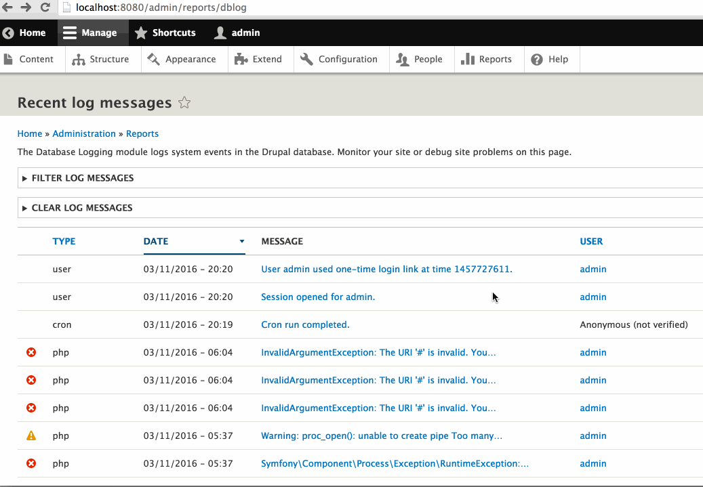
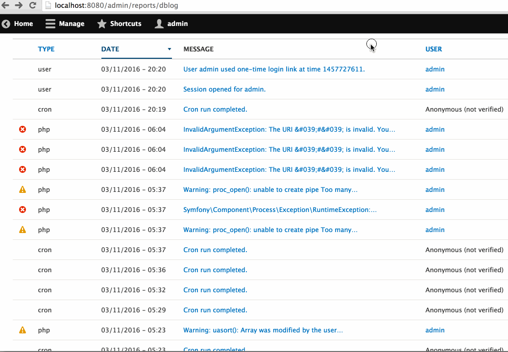

#midcamp
@WeAreGenuine
D8 AJAX /
Michael Miles
Demystifying AJAX Callback Commands
(in Drupal 8)
MidCamp 2016
Background image modified version of "Chicago Bean" by Sergey Gabdurakhmanov
Goals of this Session
- Explain AJAX callback commands
- Demonstrate AJAX callback commands
- Outline custom AJAX callback commands
Michael Miles
From: Boston, MA USA
Work: Genuine @WeAreGenuine(.com)
Exp: Working with Drupal since 2008.
Twitter: @mikemiles86
Drupal.org: mikemiles86
All the Places: mikemiles86
mike-miles.com
Warning About Example Code
- There is example code
- Some coding standards ignored
What are Callback Commands
From a High Level
- The response of all AJAX requests
- A JavaScript method attached to an object
- PHP code to invoke a JavaScript method
Example: The "Remove" Command

Showing use of the 'remove' AJAX Callback command. A link is clicked, which makes an AJAX request, which returns the command to remove the image on the page.
On the Client Side
- A wrapper for additional javascript
- A method on the 'Drupal.AjaxCommands.prototype' object
- Accepts three arguments:
- ajax
- response
- status
Core Example: Remove Command (JavaScript)
Drupal.AjaxCommands.prototype = {
// ...
/**
* Command to remove a chunk from the page.
*
* @param {Drupal.Ajax} [ajax]
* @param {object} response
* @param {string} response.selector
* @param {object} [response.settings]
* @param {number} [status]
*/
remove: function (ajax, response, status) {
var settings = response.settings || ajax.settings || drupalSettings;
$(response.selector).each(function () {
Drupal.detachBehaviors(this, settings);
})
.remove();
},
//...
misc/ajax.js On the Server Side
- A PHP class which implements CommandInterface
- Class must have a 'render' method
- 'render' must return an associative array
- Must have a 'command' element
- Value is name of Javascript command
- Additional elements sent as response data
Core Example: Remove Command (PHP)
namespace Drupal\Core\Ajax;
/**
* AJAX command for calling the jQuery remove() method.
* ...
*/
class RemoveCommand Implements CommandInterface {
// ...
/**
* Implements Drupal\Core\Ajax\CommandInterface:render().
*/
public function render() {
return array(
'command' => 'remove',
'selector' => $this->selector,
);
}
}
core/lib/Drupal/Core/Ajax/RemoveCommand.php Callback Commands Are...
- Methods attached to 'Drupal.AjaxCommands.prototype'
- PHP Class implementing CommandInterface
- Returned by all Ajax Requests
Using Callback Commands
To Use Commands...
-
Define a callback path and method
- Returns an AjaxResponse object
- Attach AJAX to page elements
- Include Drupal AJAX JavaScript library
Example Scenario 
Example Scenario. Want to use Ajax commands to improve the dblog page.
1.a Define a callback path
ajax_dblog.event:
path: '/admin/reports/dblog/{method}/event/{event_id}'
defaults:
_controller: '\Drupal\ajax_dblog\Controller\DbLogController::ajaxEventDetails'
requirements:
_permission: 'access site reports'
method: 'nojs|ajax'
ajax_dblog/ajax_dblog.routing.yml Create a route for the Ajax callback. Use a route parameter '{method}' to handle graceful degredation if path is reached via ajax or not-ajax (nojs). On line #4 define the controller and method that will be used to return the AjaxResponse object.
1.b Return an AjaxResponse object with commands.
use \Drupal\dblog\Controller\DbLogController as ControllerBase;
// Returns responses for ajax_dblog routes.
class DbLogController extends ControllerBase {
// ...
// Return details about a specific database log message.
public function ajaxEventDetails($method, $event_id) {
// ...
$event_url = Url::fromRoute('dblog.event', array('event_id' => $event_id));
// Using ajax?
if ($method == 'ajax') {
// ...
// Create an AjaxResponse.
$response = new AjaxResponse();
// Remove old row
$response->addCommand(new RemoveCommand('#dblog-event-row-' . $event_id));
// Insert event details after event.
$response->addCommand(new AfterCommand('#dblog-event-' . $event_id, $event_details));
} else {
// Redirect to actual page.
$response = new RedirectResponse($event_url->toString(), 302);
}
return $response;
}
ajax_dblog/src/Controller/DbLogController.php Define a callback method in controller. Lines #12 thru #17, creating an AjaxResponse object adding multiple commands using the 'addCommand' method. Line #20 handles building a redirect response if method reached not by ajax (graceful degradation).
2. Attach AJAX to page elements
use \Drupal\dblog\Controller\DbLogController as ControllerBase;
// Returns responses for ajax_dblog routes.
class DbLogController extends ControllerBase {
// Override parent overview() method.
public function overview() {
// Call the parent overview method.
$build = parent::overview();
// Alter the links for each log message.
foreach ($build['dblog_table']['#rows'] as &$row) {
//...
// Build link options
$options = array('attributes' => array(
'class' => array('use-ajax', 'dblog-event-link'),
));
// Replace with a new link.
$link = Link::createFromRoute($text, 'ajax_dblog.event', $perms, $options);
$row['data'][3] = $link;
}
//...
return $build;
}
ajax_dblog/src/Controller/DbLogController.php Override the method and alter the data to render the dblog page. On lines #11 - 13, build array of link options. Adding the class 'use-ajax' so AJAX framework knows to serve link with an AJAX request.. On line #15 create a new link for the row item.
3. Include Drupal AJAX library
use \Drupal\dblog\Controller\DbLogController as ControllerBase;
// Returns responses for ajax_dblog routes.
class DbLogController extends ControllerBase {
// Override parent overview() method.
public function overview() {
// Call the parent overview method.
$build = parent::overview();
// Alter the links for each log message.
foreach ($build['dblog_table']['#rows'] as &$row) {
// ...
}
// Add Ajax library.
$build['#attached']['library'][] = 'core/drupal.ajax';
return $build;
}
ajax_dblog/src/Controller/DbLogController.php Override the method and alter the data to render the dblog page. On line #11, attach the Drupal core Ajax library to the '#attached]['library' array of the render array.
Example Scenario Result

Example Scenario: When log event title is clicked, an ajax request is made for the details and an ajax command is returned to instert the data into the table.
To Use Callback Commands...
- Define callback route and method
- Return AjaxResponse object
- Attach Ajax to page
Custom Callback Commands
To Create a Command...
- Add a method to the Drupal ajax command JavaScript object
- Define a PHP class that implements CommandInterface
- Define a 'render' method
- Must return associative array with a 'command' element
- Value is name of the JavaScript command
- Additional elements for response data
Example Scenario
Example Scenario. Would like to improve transition with a slide animation.
1 . Add a method to 'Drupal.AjaxCommands.prototype'
(function ($, window, Drupal, drupalSettings) {
'use strict';
// Command to toggle sliding of content on page.
Drupal.AjaxCommands.prototype.slideToggle = function(ajax, response, status){
// Get duration if sent, else use default of slow.
var duration = response.duration ? response.duration : "slow";
// Toggle selected element(s).
$(response.selector).slideToggle(duration);
}
// ...
}
ajax_dblog/js/ajax.js Attach a new 'slideToggle' command to the Drupal AJAX Commands JavaScript object. Function takes in the 3 arguments "ajax", "response" & "status". Wraps jQuery functions to toggle sliding (show/hide) of content based on selector.
2. Define a PHP class that implements CommandInterface
namespace Drupal\ajax_dblog\Ajax;
use Drupal\Core\Ajax\CommandInterface;
// An AJAX command for calling the jQuery slideToggle() method.
class SlideToggleCommand implements CommandInterface {
// Constructs an SlideToggleCommand object.
public function __construct($selector, $duration = NULL) {
$this->selector = $selector;
$this->duration = $duration;
}
// Implements Drupal\Core\Ajax\CommandInterface:render().
public function render() {
return array(
'command' => 'slideToggle',
'method' => NULL,
'selector' => $this->selector,
'duration' => $this->duration,
);
}
}
ajax_dblog/src/Ajax/SlideToggleCommand.php A PHP class that implements 'CommandInterface' to define new SlideToggle command. Overrides the 'render' method and returns an associative array. On line #15 adds 'command' element, with value being the Javascript command name 'slideToggle'. Then additional elements to be sent as request data.
To Use a Custom Command...
- Tell Drupal to include custom JavaScript
- Return custom command in callback response
1.a Define a custom library in 'libraries.yml' file
ajax-dblog:
version: VERSION
css:
component:
css/ajax_dblog.module.css: {}
js:
js/ajax.js: {}
dependencies:
- core/drupal.ajax
ajax_dblog/ajax_dblog.libraries.yml Must tell Drupal about custom library with a libraries.yml file. Provide an Asset library name, lists all the files needed, and any dependencies on other libraries.
1.b Include library onto page
use \Drupal\dblog\Controller\DbLogController as ControllerBase;
// Returns responses for ajax_dblog routes.
class DbLogController extends ControllerBase {
// Override parent overview() method.
public function overview() {
// Call the parent overview method.
$build = parent::overview();
// Alter the links for each log message.
foreach ($build['dblog_table']['#rows'] as &$row) {
// ...
}
// Add Ajax library.
$build['#attached']['library'][] = 'ajax_dblog/ajax-dblog';
return $build;
}
ajax_dblog/src/Controller/DbLogController.php On line #11, attach custom library to render array. Replaces the attachment of the core ajax library from earlier example.
2. Add command to response obect returned by callback
use \Drupal\dblog\Controller\DbLogController as ControllerBase;
// Returns responses for ajax_dblog routes.
class DbLogController extends ControllerBase {
// ...
// Return details about a specific database log message.
public function ajaxEventDetails($method, $event_id) {
// ...
if ($method == 'ajax') {
// ...
// Create an AjaxResponse.
$response = new AjaxResponse();
// Remove old row
$response->addCommand(new RemoveCommand('#dblog-event-row-' . $event_id));
// Insert event details after event.
$response->addCommand(new AfterCommand('#dblog-event-' . $event_id, $event_details));
// SlideToggle event details.
$response->addCommand(new SlideToggleCommand('#dblog-event-details-' . $event_id));
}
// ...
return $response;
}
ajax_dblog/src/Controller/DbLogController.php On line #19 add custom command to AjaxResponse object.
Example Scenario
Example Scenario. Added a custom callback command to improve slide animation.
Let's Review
AJAX Callback Commands Are...
- Methods attached to 'Drupal.AjaxCommands.prototype'
- PHP Class implementing CommandInterface
- Returned by all Ajax Requests
To Use AJAX Callback Commands...
- Define callback route and method
- Return AjaxResponse object
- Attach Ajax to page
To Create AJAX Callback Commands...
- Add method to Drupal ajax command JavaScript object.
- Write PHP command class with a 'render' method.
To Use Custom AJAX Callback Commands...
- Include custom library
- Include custom command in callback response
Resources
Drupal 8 AJAX Api: bit.ly/Drupal8Ajax
This Presentation: bit.ly/Mid16Ajax
Presentation Slides: bit.ly/Mid16AjaxSlides
Example Code: bit.ly/Mid16AjaxEx
Creating Commands in D8: bit.ly/D8AjaxCmds
MidCamp Sprint
Sunday, March 20 at 10 am
(across the street from the venue)
Contributors of all skill sets and levels are welcome and encouraged to join us!
Help port the Examples module! drupal.org/node/2102639
Thank You!
- Feedback: legacy.joind.in/17274
- Twitter: @mikemiles86